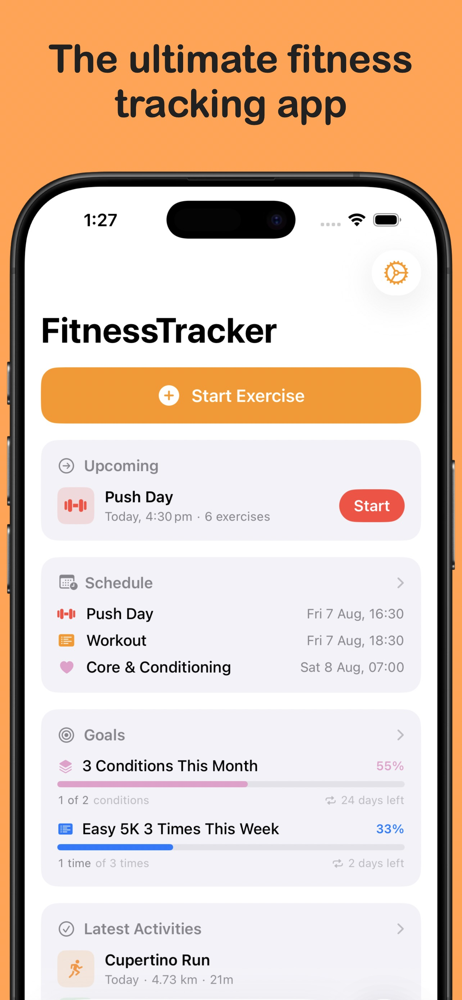
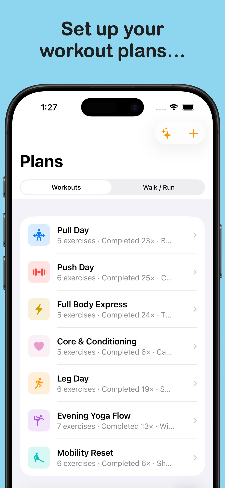
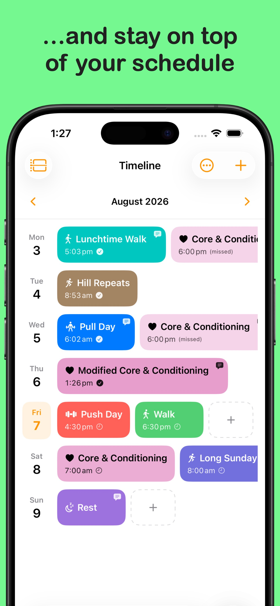
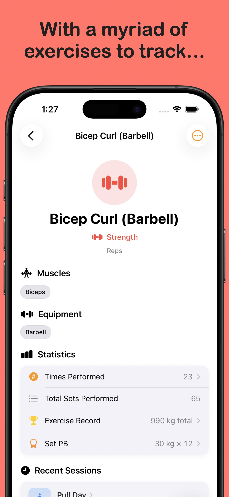
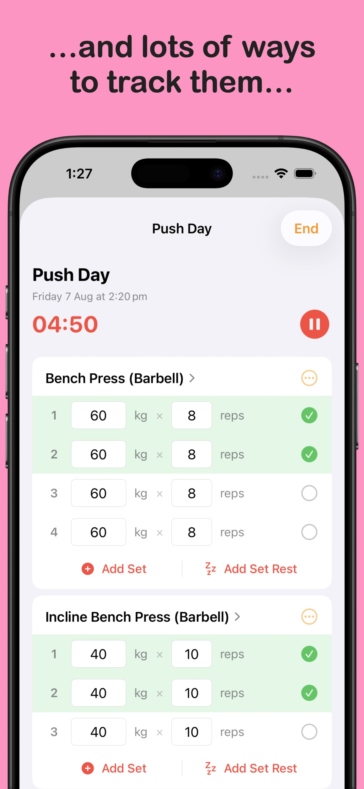
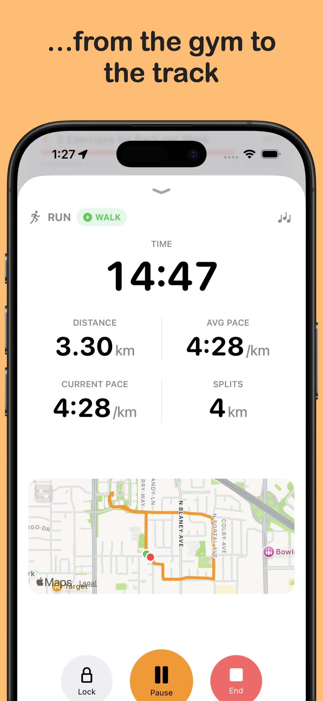
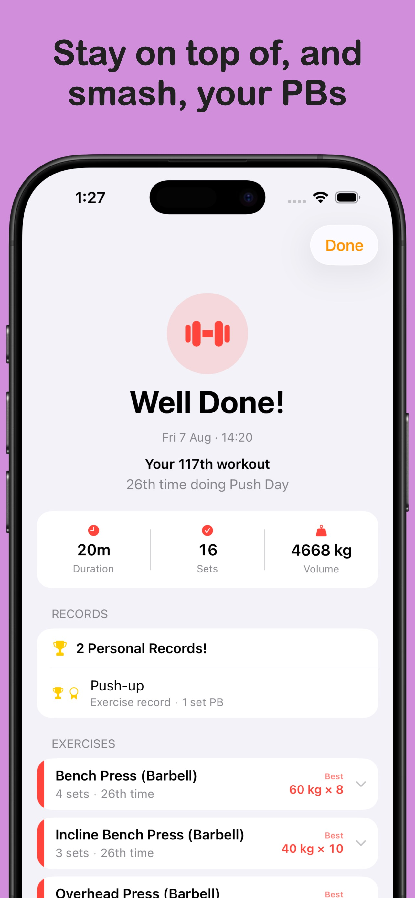
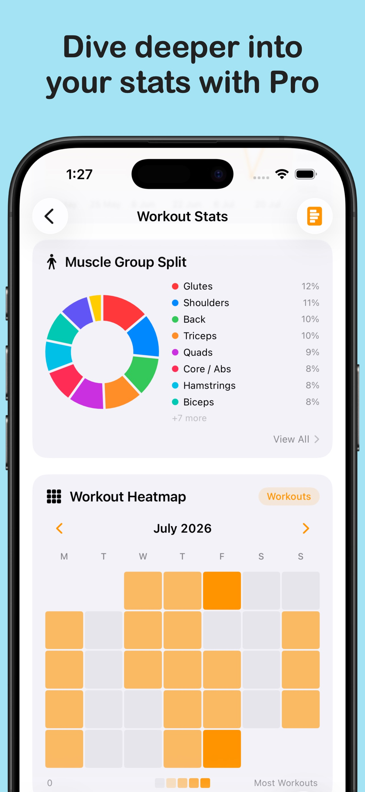
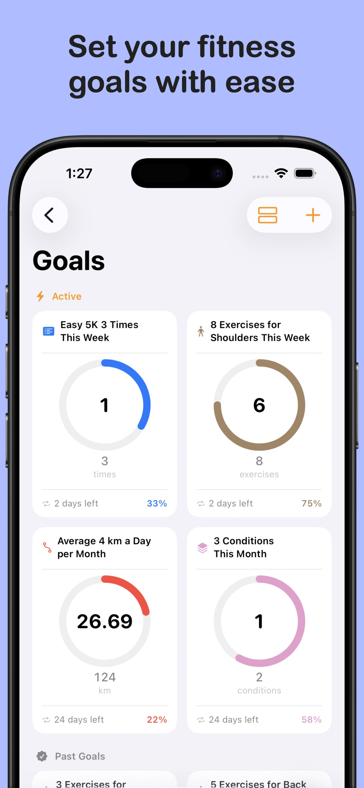
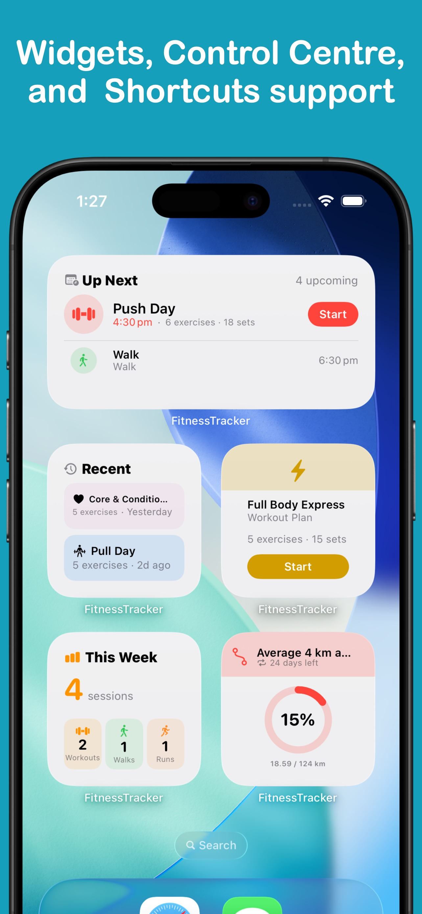

FitnessTracker
Let FitnessTracker do the thinking. Let your body do the rest.
FitnessTracker makes it easy to plan and schedule your exercise, as well as track all of your workouts, walks, and runs. And it all syncs to Apple Health.
Download from the App Store todayScreenshots










Features
- Log every workout Record gym sessions, walks, runs, and more. Track sets, reps, weights, distance, duration, and intensity for each exercise.
- Create workout plans Build custom workout routines tailored to your goals, then reuse them session after session.
- Interval Walk / Run Planss Create adjustable interval plans for your walks and runs, so you always know what is coming next.
- Schedule with calendar sync Plan your workouts across the calendar. Sync with Calendar app so your workout sessions sit alongside the rest of your schedule.
- Track gym, walk, or run Log strength, flexibility, cardio, mobility, or yoga training at the gym, or walks and runs with GPS tracking — all in one app.
- Exercise library with custom options Access hundreds of exercises across multiple categories. Add your own custom exercises to match your unique routine.
- Workout history Review every past workout, see how much you lifted, how far you ran, and track your progression over time.
- Reports and statistics See detailed breakdowns of your training volume, personal records, weekly and monthly summaries, and progress toward your goals.
- CSV and PDF export Export your complete workout history at any time to share with a trainer or keep your own records.
- Apple Health sync Workouts, distance, calories, and other metrics sync to Health automatically, keeping your fitness data in one place.
- Apple Watch app Start and log runs and walks directly from your wrist, with real-time distance and pace tracking.
- Home Screen widgets Check your goals, view this week's schedule, see your workout history, or log a quick session — all without opening the app.
FitnessTracker Pro
- Unlimited workout plans The free plan limits how many plans you can create. Pro removes the limit so you can build a library of routines for every goal and phase.
- Unlimited scheduling with templates Schedule unlimited workouts across your calendar and save unlimited schedule templates for quick reuse.
- Generated plans Let FitnessTracker create personalized workout plans based on your goals, available equipment, and training experience.
- Goals Define targets for weight, volume, distance, or frequency. Watch your progress update as you log workouts.
- Advanced statistics Unlock detailed analytics including volume trends, muscle group splits, heatmaps, personal bests, and more.
- Full customisation Choose custom app icons, organise your tab bar, or adjust keyboard to match your workflow, and personalise the app to your preferences.